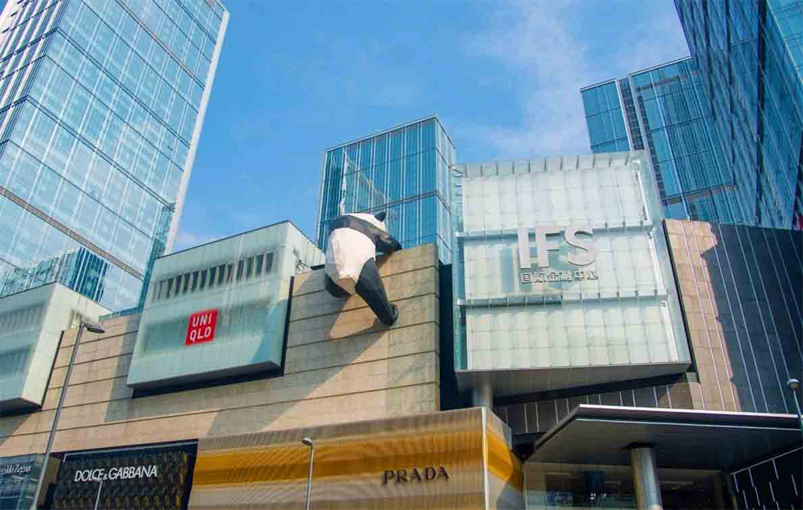

春熙路，是成都最繁华的商业街， 位于成都市锦江区春熙路街道，覆盖北新街以东、 总府路以南、红星路以西、东大街以北、南新街、中新街以及临街区域， 面积大约20公顷。街市热闹繁华，网点面积大约220000㎡。
春熙路是中国大陆最知名的商业街之一，由春熙东路、春熙西路、春熙南路、 春熙北路四条步行街组成。春熙路广义上也指由它为中心发展成的春熙路商圈，商圈指总府路以南、 上东大街以北、红星路以西、盐市口以东约0.4平方公里的地区，是成都老城区三大商圈之一。
